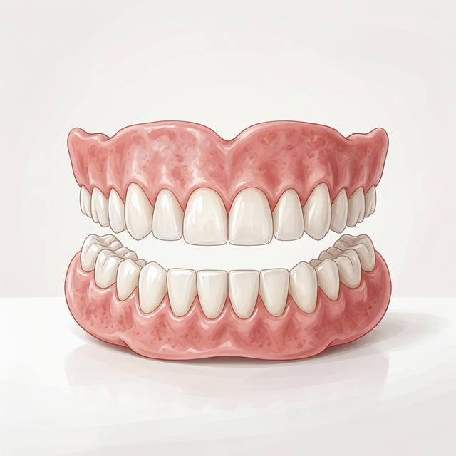
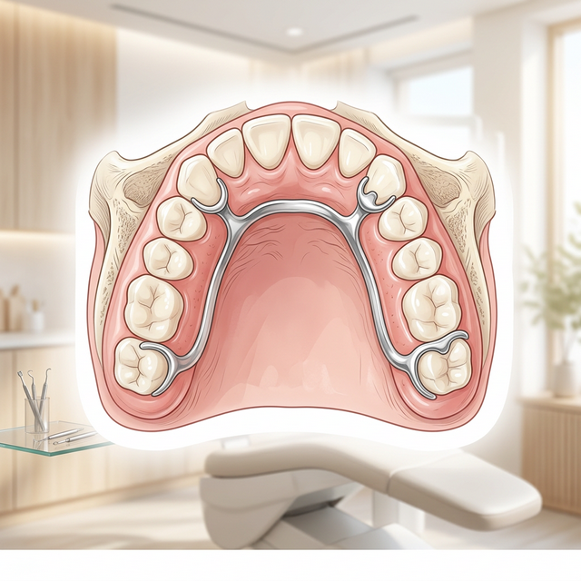
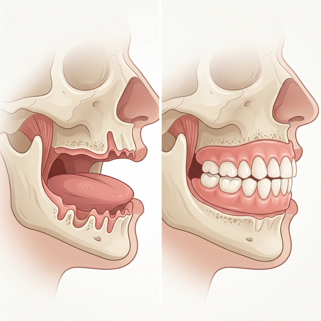
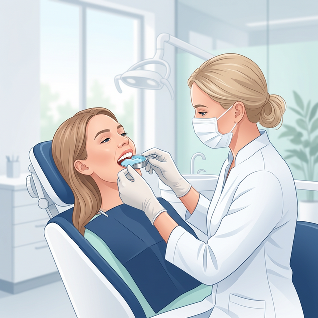
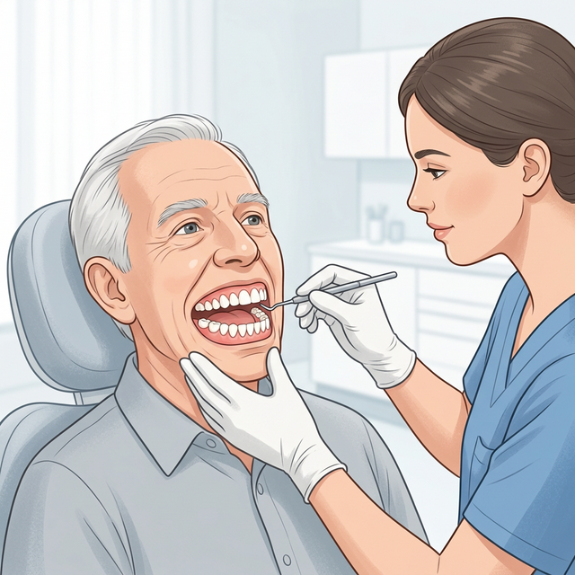

Dentures
Replacing missing teeth with comfort, confidence, and a natural-looking smile — custom crafted to fit your unique mouth.

What Are Dentures?
Dentures are removable dental appliances designed to replace missing teeth and restore the appearance and function of your mouth. Custom-fitted to your unique oral anatomy, they are crafted from high-quality acrylic or resin materials that blend naturally with your gums and remaining teeth.
Whether you have lost some or all of your teeth, there is a denture solution tailored for you — helping you eat, speak, and smile with confidence again.
Types of Dentures
The right type of denture depends on how many teeth are missing and the condition of your remaining teeth and gums.

P Partial Dentures
Designed for patients who still have some natural teeth remaining. Partial dentures fill in the gaps created by missing teeth and are anchored in place using clasps that attach to the adjacent natural teeth. They prevent remaining teeth from shifting out of position.

F Full (Complete) Dentures
For patients who have lost all their teeth in one or both arches. Full dentures rest directly on the gum tissue and are held in place by suction and the natural contours of your mouth. They fully restore chewing ability, support facial structure, and revive your smile.
Signs You May Need Dentures


What Happens During Your Visit

1 Assessment & Impressions
We start with a thorough examination of your mouth, gums, and any remaining teeth. Precise dental impressions are taken to capture the exact shape of your mouth — the blueprint for your custom denture.

2 Custom Fabrication & Try-In
Your denture is precision-crafted in the lab using your impression data. A wax trial version is tried in your mouth first, allowing us to assess fit, bite, and appearance before the final version is produced.

3 Final Fitting & Adjustments
The finished denture is placed and carefully adjusted for comfort, bite alignment, and aesthetics. We take the time to ensure it feels stable, natural, and exactly right before you leave our clinic.

4 Follow-Up & Fine-Tuning
A follow-up appointment is scheduled to check your comfort and make any fine adjustments as your mouth adapts to its new denture. We are always available if you notice any soreness or fit issues between visits.
What to Expect


Caring for Your Dentures
With proper daily care, quality dentures can serve you well for many years. Here's how to keep them in top condition:
- Clean daily: Use a soft-bristled brush and denture cleaner to remove food particles, stains, and bacteria every day — never use regular toothpaste, which can scratch the surface.
- Soak overnight: Dentures need to be kept moist. Soak them in water or a denture solution overnight so they retain their shape.
- Handle with care: Dentures can crack if dropped. When cleaning, hold them over a folded towel or a basin of water to cushion any accidental falls.
- Avoid hard or sticky foods: Skip hard nuts, toffees, or similarly tough foods that can damage or dislodge the denture.
- Keep your mouth clean: Brush your gums, tongue, and any remaining teeth daily to remove bacteria and keep your mouth feeling fresh.
- Attend regular check-ups: Regular dental visits allow us to check the fit, condition, and health of your gums — and reline or adjust the denture as your mouth changes over time.
- Store safely: When not wearing dentures, store them in a denture case with clean water, away from children and pets.
Frequently Asked Questions
The process typically takes 3–5 appointments spread over a few weeks. This includes impressions, a trial fitting, fabrication by the lab, and the final delivery appointment. We work efficiently to minimize the time you spend without teeth.
Dentures are removable appliances, not permanently fixed. However, implant-supported dentures are an option for those who prefer a fixed solution. Standard removable dentures typically need to be relined or replaced every 5–7 years as the shape of the jaw changes over time.
There is usually a brief adjustment period of 2-4 weeks. Eating and speaking may feel slightly different at first, but most patients adapt quickly. Eating soft foods initially and practicing speaking aloud can significantly speed up the process.
Modern dentures are custom-crafted to closely match the color, shape, and size of natural teeth. They are designed to complement your facial features and age, so most people cannot tell the difference. We take careful measurements and shade matching to ensure the most natural result possible.
It is generally recommended to remove dentures at night to give your gum tissue time to rest and recover. Wearing dentures 24 hours a day can increase the risk of gum irritation and accelerate bone loss. We will advise based on your specific case.
If your dentures start feeling loose, shifting when you chew or speak, or causing soreness, it is a sign the fit needs adjustment. This is normal — your jawbone changes shape over time. Regular check-ups allow us to catch these changes early and reline or replace your denture before problems worsen.
Restore Your Complete Smile
Missing teeth shouldn't hold you back. Our custom dentures are crafted to look natural, fit comfortably, and last for years.
Get in Touch
We're ready to discuss your personalized care plan. Fill out the form or reach us directly.